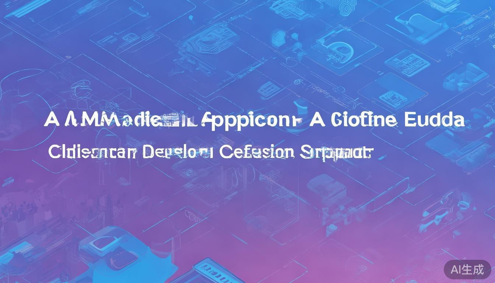

白驹 · 全局大脑 · AI 创作纪元
AI医疗应用指南
AI不会取代医生，但会用AI的医生会取代不会用的。这份指南覆盖AI在医疗领域的核心应用和实操方法。
一、医学影像诊断
应用场景
- CT/MRI分析：肺结节、脑出血、骨折检测
- X光片：肺炎、肺结核筛查
- 眼底照相：糖尿病视网膜病变、青光眼
- 病理切片：癌细胞识别、分级
主流产品
| 产品 | 公司 | 获批情况 | 特点 |
|---|---|---|---|
| 肺结节AI | 推想科技 | NMPA三类证 | 敏感性>95% |
| 糖网AI | 鹰瞳科技 | NMPA三类证 | 准确率与专家相当 |
| 骨折AI | 汇医慧影 | NMPA三类证 | 急诊快速筛查 |
医生如何使用
- 影像上传至AI系统
- AI自动标注可疑区域
- 医生审核AI结果，做出最终诊断
- AI生成结构化报告
价值：敏感性提升（减少漏诊）、效率提升（读片时间缩短50%）
二、临床决策支持

1. 辅助诊断
AI应用：
- 输入症状和检查结果，AI列出可能诊断（按概率排序）
- AI提示需要补充的检查
- AI推荐治疗方案（基于最新指南）
2. 用药审查
AI应用：
- 自动检查药物相互作用
- 提示剂量是否合适
- 识别过敏风险
3. 病历质控
AI应用：
- 自动检查病历完整性
- 提示诊断与用药是否匹配
- 生成病历质量评分
三、医学科研
1. 文献综述
AI应用：
- 输入研究主题，AI检索并总结最新文献
- AI提取文献中的关键数据（样本量、方法、结果）
- AI生成文献综述初稿
工具：Elicit、Consensus、PubMed+AI插件
2. 数据分析
AI应用：
- 临床数据统计分析（t检验、卡方检验、回归分析）
- AI生成统计图表
- AI解读统计结果
3. 论文写作
AI应用：
- AI优化英文表达
- AI生成摘要初稿
- AI推荐投稿期刊
四、患者管理
1. 智能随访
AI应用：
- AI自动发送随访提醒
- AI收集患者症状反馈
- AI识别异常情况并提醒医生
2. 健康宣教
AI应用：
- AI生成个性化健康指导（饮食、运动、用药）
- AI回答患者常见问题
- AI生成出院指导
五、医院管理
1. 智能导诊
AI应用：
- 患者描述症状，AI推荐科室
- AI回答就诊流程问题
- 减少人工导诊压力
2. 运营分析
AI应用：
- AI分析门诊量、住院量趋势
- AI预测高峰时段，优化排班
- AI分析患者满意度，找出改进点
六、注意事项
法律与伦理
- AI不能替代医生诊断：AI仅供辅助，最终诊断必须由医生做出
- 知情同意：使用AI辅助诊疗应告知患者
- 数据隐私：患者数据脱敏后才能用于AI训练
- 责任归属：AI误诊的责任由医生和医院承担
使用建议
- 保持批判性思维：AI可能出错，要验证
- 持续学习：AI更新快，要跟上最新进展
- 人机协作：AI做初筛，人做决策
- 关注获批情况：使用有NMPA/FDA批准的AI产品
七、未来趋势
- 多模态融合：影像+基因+临床数据综合判断
- 个性化医疗：基于基因组学的精准治疗
- 手术机器人：AI辅助的微创手术普及
- 药物研发：AI加速新药发现
核心理念：AI是医生的「超级助手」，让医生从重复劳动中解放出来，专注于需要人文关辉和复杂决策的核心工作。
出处声明：本页内容为白驹全局大脑原创，或已标注引用来源；改编内容遵循原始项目许可证（如 MIT / CC），不侵犯原作者权益。若引用内容涉及版权问题，请联系我们更正。